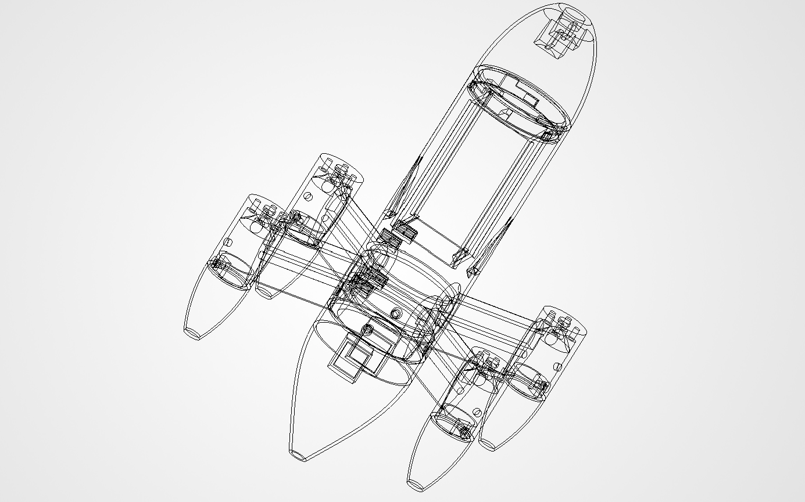

Independent project · April 2026 to present
SpeedUAS: high-speed quadcopter
A 5-inch, 6S quadcopter with a streamlined body-of-revolution fuselage

- My role
- Sole designer
- Team
- Just me
- Dates
- Apr 2026 to present
- Status
- In development · not built or flown
Numbers
Top speed for this first airframe
From a thrust-equals-drag model using datasheet thrust and assumed drag coefficients
Battery length. The whole pack is 34.9 × 38.7 × 80.7 mm by caliper, larger than I modeled from the datasheet.
- Fuselage diameter. The fuselage is a Myring body of revolution.
- 62 mmdesign
- Chord on the four NACA 0024 arms, which carry a carbon-fibre spar and internal wire channels
- 38 mmdesign
The 240 km/h figure is an estimate. There is no CFD result, no thrust data and no flight data yet.
Context
SpeedUAS is a 5-inch, 6S quadcopter built around a streamlined fuselage. The fuselage is a Myring body of revolution, 62 mm in diameter. The battery sits forward and the flight electronics aft, which keeps the frontal area small.
Four integral NACA 0024 arms carry the motors, with a carbon-fibre spar and internal wire channels. This first iteration is meant to validate the airframe and set a baseline for a second one.
What I did
- I'm designing the airframe in SolidWorks and sizing the electric propulsion package: motor, ESC, propeller and battery.
- I print fit-check parts and correct the model from caliper measurements, one revision at a time.
- I'm setting up CFD in Ansys Fluent on the airframe geometry to estimate drag before I commit to a build configuration.
- I wrote the thrust stand logger (Arduino Nano with an HX711 load cell amplifier), MATLAB scripts to log and analyze runs, and test procedures for load cell calibration and static thrust.
Design process
-
Arms
NACA 0024 over NACA 0018
I considered a thinner NACA 0018 section for the arms. It has slightly less drag, but far less bending stiffness and no room for the spar and wiring, so I stayed with the 0024 at a 38 mm chord.
-
Fit check · battery
The battery didn't fit
I modeled the pack from its datasheet with about 1 mm of clearance. The real pack measured 34.9 × 38.7 × 80.7 mm.
What changed: the fuselage grew and the battery cage was resized to the measured part.
-
Fit check · motor mount
I misread a datasheet
I drew the motor bolt pattern as a 16 mm square. The "16" on the datasheet was the bolt circle.
What changed: I measured the motor and redrew the pattern, which also let the nacelles shrink to the motor.
-
Fit check · motor plate
A bridge that printed badly
The motor plate had a 29 mm unsupported bridge that printed poorly.
What changed: the bridge became a funnel-shaped cavity with screw pockets. Every part now prints without supports.
Analysis
A thrust-equals-drag model predicts a top speed of about 240 km/h against the 160 to 175 km/h target. It uses datasheet thrust and assumed drag coefficients, so I treat it as an estimate until I have my own drag and thrust numbers.
The CFD is meant to supply the drag number. The Fluent case is set up and being meshed. Nothing is solved yet.
The thrust stand is meant to supply the thrust number. The stand is designed, and the logger, MATLAB scripts and test procedures are written. None of it has been run, so there is no thrust data.
Requirements
I hold the design to my own requirements document, QUAD-REQ-001 Rev E. Each requirement says how it gets verified. Most of the performance ones can only be closed by flight test, so they're still open.
- PR-01 · Top speed of at least 140 km/h in calm air · flight test
- Opennot flown
- PR-02 · Target top speed of 160 to 175 km/h in calm air · flight test
- ~240 km/hpredicted
- PR-04 · Thrust-to-weight above 10:1 at full throttle · analysis and thrust stand
- Openparts not all weighed
- PR-05 · At least 2 minutes of mixed flight, full-throttle bursts of 30 s or less · flight test
- Openrewritten
- PR-08 · Stable hover for at least 3 minutes without pilot correction · flight test
- Opennot flown
- AF-03 · Less drag than a flat-plate center stack · CFD in Ansys Fluent
- Openmeshing
- AF-07 · Center of gravity within 5 mm of the geometric center · measurement
- Opennot built
- AF-08 · Motor mount matches the measured motor · inspection
- Metmeasured
- AF-11 · Battery bay fits the measured pack · fit-check print
- Metmeasured
- AF-12 · Every part prints without supports · inspection
- Met
- DOC-04 · Test procedures written before any test is run · inspection
- MetTP-01 to TP-03
PR-05 used to ask for 3 minutes at full throttle. At the datasheet current of about 55 A per motor, the 1300 mAh pack lasts roughly 20 seconds at full throttle, so I rewrote it as mixed flight with short full-throttle bursts.
Selected parts
- Motors (×4)
- AOS Supernova 2207 1980KV
- Flight controller and ESC
- T-Motor F7 + F55A Pro II stack
- Props
- HQ 5×4.5×3 V1S
- Battery
- GNB 6S 1300 mAh HV
- Receiver and transmitter
- RadioMaster RP4TD-M · Boxer ELRS
- FPV camera and VTX
- Caddx Ratel 2 · TBS Unify Pro32 NanoVTX planned
- GPS
- HGLRC M100 Minito confirm
- Arm spar
- 4 mm OD carbon-fibre tube
- Filament
- PAHT-CF flight parts · ASA/ABS nose · PLA fit checks
Status
| Airframe CAD | In development |
|---|---|
| Fit-check prints | Done, measured with calipers |
| CFD | Set up, meshing, not solved |
| Thrust stand | Designed, not run, no data |
| Thrust stand logger and test procedures | Written, not run yet |
| Aircraft | Not built, not flown |
In development. Fit-check prints done. CFD is meshing and not yet solved. The aircraft is not assembled or flown.